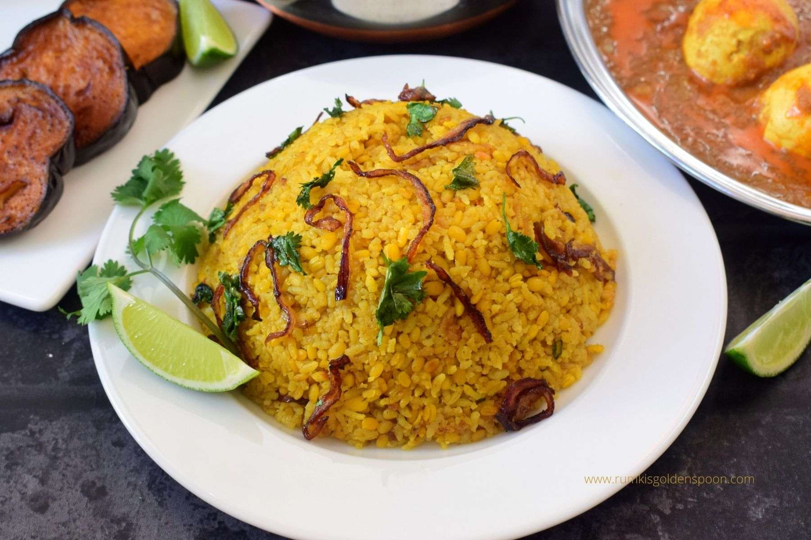

Home
Bhuna Khichuri

The best meal to have following a Rainy Night
Bhuna khichuri recipe is an exemplary moong dal khichuri which is immensely popular in Bangladesh, West Bengal and few other parts of north east India. The texture of bhuna khichuri is completely different from other khichuri recipes. It is dry and grainy in texture exactly like pulao with extraordinary taste and flavour. In this preparation, gobindobhog chaal (Small grain rice) and shona moong dal (Split yellow lentils) are fried together and then cooked in hot water with some specific spices and fried onions. It always requires a side for a complete meal. It is mostly accompanied with egg curry, chicken curry, mutton kosha or paneer curry.
Ingredients
- 1/4 cup cooking oil
- 1/4 cup mustard oil
- 1 tablespoon of whole cumin seeds
- 2 bay leaves
- 2-3 cloves
- 2-3 whole green cardamom
- 1 star anise
- 1 medium onion thinly sliced
- 2 teaspoons of salt
- 1 tablespoon of ginger paste
- 1 tablespoon of garlic paste
- 1 teaspoon of turmeric powder
- 1 teaspoon of chili powder
- 1/2 teaspoon of coriander powder
- 1/2 teaspoon of cumin powder
- 1/2 teaspoon of garam masala
- 2 cups of rice
- 1 cup of mung beans
- 6 cups of hot water
- 3-4 whole fresh green chilies
- 2 tablespoons of ghee
Recipie Instructions
-
In a small frying pan add in the mung beans and dry roast them for 3-4 minutes on a medium high flame stirring at the same time to make sure the beans do not burn.
They should release a nice aroma indicating they are done
-
Leave aside and let them cool down
-
In a large bowl add in the rice and the cooled down mung beans. Wash and rinse both the rice and beans under
tap cold water to get rid of any starch or residue then soak with cold water for 15 -20 minutes
-
Meanwhile in a large sauce pot add in cooking oil and mustard oil
-
Add in the whole spices and cook on a medium flame for 1-2 minutes
-
Add in the sliced onions, cook the onions until they turn nice and brown on a medium high flame, stirring occasionally
-
Add in the salt, ginger/garlic paste
-
Stir and cook for another 1-2 minutes
-
Add in the all the ground spices, turmeric, chili, coriander, cumin and garam masala. The chili powder can be adjusted to preference
-
Stir and mix all the ingredients in well. Cook the spices for 1-2 minutes on a medium flame
-
Drain the rice and mung beans in a colander and add into the masala
-
Stir and mix in well to make sure everything is well incorporated, cook this for another 1-2 minutes on a high flame
-
Add in the hot water (the water ratio is double to that of the rice and beans combined, here 6 cups of hot water as the recipe uses 2 cups of rice and 1 cup of beans)
-
Stir in well adding the green chilies and let the mixture come to a boil on a high flame
-
Then cover and lower the flame all the way down and cook the rice and beans for 20 minutes
-
Once cooked uncover and drizzle over with ghee and gently mix up the rice
-
Enjoy!
Return to Home